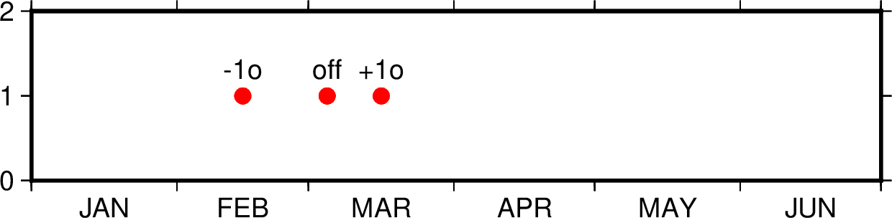

TIME参数
本节列出所有时间相关参数，参数的默认值在中括号内列出。
- TIME_EPOCH
指定所有相对时间的参考时刻 [1970-01-01T00:00:00]
其格式为 yyyy-mm-ddT[hh:mm:ss] 或 yyyy-Www-ddTT[hh:mm:ss]
- TIME_UNIT
指定相对时间数据相对于参考时刻的单位 [s]
可以取：
y ：年；假定一年365.2425天；
o ：月；假定所有月是等长的；
d ：天；
h ：时；
m ：分钟；
s ：秒；
- TIME_SYSTEM
TIME_EPOCH 和 TIME_UNIT 的合并版
即指定 TIME_SYSTEM 相当于同时指定了 TIME_EPOCH 和 TIME_UNIT。 可取如下值：
JD：等效于-4713-11-25T12:00:00 d
MJD：等效于1858-11-17T00:00:00 d
J2000：等效于2000-01-01T12:00:00 d
S1985：等效于1985-01-01T00:00:00 s
UNIX： 等效于1970-01-01T00:00:00 s
RD0001：等效于0001-01-01T00:00:00 s
RATA：等效于0000-12-31T00:00:00 d
该参数并不存在于
gmt.conf中，当指定该参数时，其会被自动转换为 TIME_EPOCH 和 TIME_UNIT 对应的值。- TIME_WEEK_START
指定周几是一周的第一天，可取值为Monday或Sunday [Monday]
- TIME_Y2K_OFFSET_YEAR
当用两位数字表示四位数字的年份时，TIME_Y2K_OFFSET_YEAR 给定了100年序列的第一年 [1950]
比如，若TIME_Y2K_OFFSET_YEAR=1729，则数字29到99分别表示1729到1799，而数字00 到28则表示1800到1828。默认值为1950，即00到99表示的年份范围为1950到2049。
- TIME_REPORT
控制GMT运行进度报告中是否显示时间戳 [none]
可以取三个值：
none 不显示时间戳
clock 显示绝对时间
elapsed 显示自会话开始所经历的时间
- TIME_IS_INTERVAL
控制输入的日期时间数据截断和微调 [off]
其可以取如下三类值：
off：即不对输入数据做任何截断和调整
+nunit：n 为某个整数，unit为某个时间单位。其表示 将输入的日期时间数据截断为 nunit 的整数倍，并将其放在紧接着的时间 间隔的中间
-nunit：同样，但将该输入数据放在前一个时间间隔的中间
时间间隔单位 unit 可以取如下值：
y 年
o 月
u 周
h 小时
m 分钟
s 秒
下面的示例在时间坐标系下绘制了三个红点，每个红点的输入数据都是:
1997-03-05 1
图中展示了 TIME_IS_INTERVAL 取不同值时的效果：
off：1997-03-05 解释为 1997-03-05T00:00:00.00.0
+1o：1997-03-05 解释为 1997-03-15T12:00:00.0
-1o：1997-03-05 解释为 1997-02-15T12:00:00.0
 - TIME_INTERVAL_FRACTION
确定时间轴开头和结尾的部分时间间隔是否需要标注 [0.5]
对于时间轴而言，若开头/结尾部分的时间间隔大于指定的时间间隔的某个比例，则 绘制开头/结尾部分的标注并将标注置于时间间隔的中间。